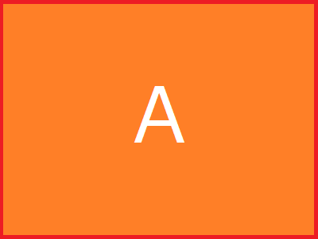

Sample
見出し1
こんにちは
見出し2
こんにちは
見出し3
こんにちは
見出し4
こんにちは
見出し5
こんにちは
見出し6
こんにちは
段落
祇園精舎の鐘の声、諸行無常の響きあり。沙羅双樹の花の色、盛者必衰の理をあらはす。奢れる人も久しからず、ただ春の夜の夢のごとし。猛き者も遂にはほろびぬ、ひとへに風の前の塵に同じ。
遠く異朝をとぶらへば、秦の趙高、漢の王莽、梁の朱忌、唐の禄山、これらは皆旧主先皇の政にもしたがはず、楽しみをきはめ、諫めをも思ひ入れず、天下の乱れん事を悟らずして、民間の愁ふるところを知らざつしかば、久しからずして、亡じにし者どもなり。
引用
祇園精舎の鐘の声、諸行無常の響きあり。沙羅双樹の花の色、盛者必衰の理をあらはす。奢れる人も久しからず、ただ春の夜の夢のごとし。猛き者も遂にはほろびぬ、ひとへに風の前の塵に同じ。
遠く異朝をとぶらへば、秦の趙高、漢の王莽、梁の朱忌、唐の禄山、これらは皆旧主先皇の政にもしたがはず、楽しみをきはめ、諫めをも思ひ入れず、天下の乱れん事を悟らずして、民間の愁ふるところを知らざつしかば、久しからずして、亡じにし者どもなり。
番号なしリスト
- アイテム1
- アイテム2
- アイテム3
- アイテム4
- アイテム1
- アイテム2
- アイテム3
- アイテム3.1
せつめい - アイテム3.2
- アイテム3.1
- アイテム4
- アイテム1
せつめい - アイテム2
- アイテム3
せつめい - アイテム4
番号付きリスト
- アイテム1
- アイテム2
- アイテム3
- アイテム4
- アイテム1
せつめい - アイテム2
- アイテム3
せつめい - アイテム4
- アイテム1
- アイテム2
- アイテム2.1
- アイテム2.2
せつめい
- アイテム3
- アイテム4
コードブロック
aaa
bbb
cccc
リンク
そのままリンク
テキスト付リンク
My favorite search engine is Duck Duck Go.
補足付きリンク
リンクにマウスカーソル重ねると補足テキストが表示される My favorite search engine is Duck Duck Go.
テーブル
| 野菜 | 特徴 |
|---|---|
| トマト | 赤い。リコピンたぷり。うまい。 |
| きゅうり | 緑色。細長い。うまい。 |
| 左寄せ | 中央寄せ | 右寄せ |
|---|---|---|
| トマト | 赤い | うまい |
| きゅうり | 緑色 | うまい |
画像埋め込み


htmlタグ
htmlタグを有効にするにはconfig.tomlに以下を追加
[markup]
[markup.goldmark]
[markup.goldmark.renderer]
unsafe = true
色指定テキスト
これは赤いテキストだよ